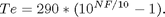
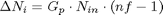
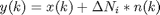

NoiseClass
Parent class: AttributeClass. Noise in RF/analog blocks.
Properties
Inherited Properties
- Name - Object name
Methods
k
Boltzmann constant: 1.38*10e-23 Joule/Kelvin.
Te
Equivalent RF component temperaturein Kelvin. Default value is 290 K.
R
Resistor impedance. Default value 50 Ohm.
B
The bandwidth of the useful signal in the modeled RF/analog block.
SNR
Signal to Noise Ratio at the OUTPUT of the RF/analog block
write@NoiseClass
OBJ=write(OBJECT,'NF',VALUE)
A convenient way to model the amount of noise introduced by an RF component is the noise figure (NF). If NF is specified instead of equivalent temperature, then the value of property Te is computed from NF with the next relation:

OBJ=write(OBJECT,'TEMP',VALUE)
The input VALUE is written to property Te.
nf@NoiseClass
NF=nf(OBJECT)
Return the noise figure of the RF/analog block.
effect@NoiseClass
The added noise power in the ith RF/analog block in the tuner is:

where Gp, Nin, and nf are the power gain, the input noise power and the noise factor (the linear value of the noise figure).
The implementation of thermal noise effect in the input signal.

where x, y, n are input, output respectivelly unit variance normally distibuted random signal.
OUTP=effect(OBJECT,INP)
The noise is added to signal INP and returned in signal OUTP.